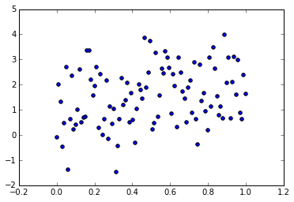
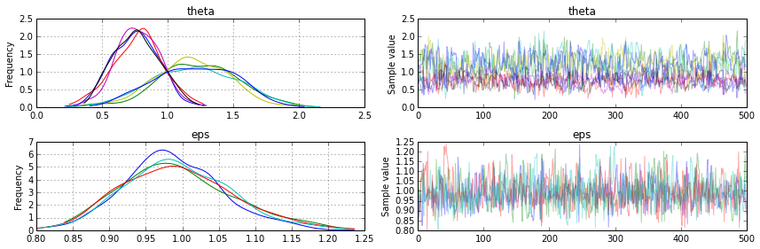

Probabilistic Programming in Python using PyMC
Authors: Thomas V. Wiecki, John Salvatier, Christopher Fonnesbeck
Abstract
Probabilistic Programming (PP) allows flexible specification of statistical Bayesian models in code. PyMC3 is a new, open-source PP framework that features next generation Markov chain Monte Carlo (MCMC) sampling algorithms such as Hamiltonian Monte Carlo (HMC). In contrast to most other PP frameworks, PyMC3 allows model specification in Python using intuitive syntax. The software itself is written in pure Python which makes it very extensible. The model specification is transparently transcoded via Theano to C and compiled to machine code for maximum speed. Theano also natively supports automatic differentation for computing the gradient required for HMC. In addition, PyMC3 supports parallel sampling natively and allows saving traces to various backends including sqlite. Special syntax for describing general linear models allow for specification of hierarchical multifactor models into oneliners.
Installation
As PyMC3 is written in pure Python, installation is thus greatly simplified over PyMC2 which required compilation of Fortran code. PyMC3 has the following dependencies: Theano, NumPy, SciPy, and Matplotlib; as well as the following optional dependencies: Pandas, Patsy, Statsmodels.
The code is hosted on GitHub at https://github.com/pymc-devs/pymc and is distributed under the liberal Apache License 2.0 and contributions are encouraged.
A complete Python installation can most easily be obtained by installing the free Anaconda Python Distribution by ContinuumIO. After successfull installation, PyMC3 can be installed using pip:
pip install git+https://github.com/pymc-devs/pymc
Model specification
Consider the following linear Bayesian model:
where
The data might look as follows:
def print_public(module):
import pprint
pprint.pprint([name for name in dir(module) if not name.startswith('_')])
import numpy as np
np.random.seed(123)
size = 100
X = np.linspace(0, 1, size)
alpha = 1
beta = 1
Y = alpha + X*beta + np.random.randn(size)
%matplotlib inline
import matplotlib.pyplot as plt
plt.scatter(X, Y)
<matplotlib.collections.PathCollection at 0x7f21eaff0d10>

import pymc3 as pm
with pm.Model() as model_linear:
alpha = pm.Normal('alpha', mu=0, sd=1)
beta = pm.Normal('beta', mu=0, sd=1)
sigma = pm.HalfNormal('sigma', sd=1)
Y_obs = pm.Normal('Y_obs', mu=alpha + beta * X, sd=sigma, observed=Y)
As you can see, with a few minor modifications, specification of this model in Python code using PyMC3 closely follows the statistical model printed above. PyMC3 comes with most commonly used discrete and continuous probability distributions:
print_public(pm.distributions)
['Bernoulli',
'Beta',
'BetaBin',
'Binomial',
'Bound',
'Categorical',
'Cauchy',
'ChiSquared',
'ConstantDist',
'Continuous',
'DensityDist',
'Dirichlet',
'Discrete',
'DiscreteUniform',
'Distribution',
'Exponential',
'Flat',
'Gamma',
'Geometric',
'HalfCauchy',
'HalfNormal',
'InverseGamma',
'Laplace',
'Lognormal',
'Multinomial',
'MvNormal',
'NegativeBinomial',
'Normal',
'Pareto',
'Poisson',
'T',
'Tpos',
'Uniform',
'Wald',
'Weibull',
'Wishart',
'ZeroInflatedPoisson',
'continuous',
'discrete',
'dist_math',
'distribution',
'logtransform',
'meta',
'multivariate',
'simplextransform',
'special',
'timeseries',
'transform',
'transforms']
The first argument is the name of the random variable (RV). Following arguments specify the priors of the distribution which are described in the doc string:
help(pm.Normal)
Help on class Normal in module pymc.distributions.continuous:
class Normal(pymc.distributions.distribution.Continuous)
| Normal log-likelihood.
|
| .. math::
ight\}
|
| Parameters
| ----------
| mu : float
| Mean of the distribution.
| tau : float
| Precision of the distribution, which corresponds to
| :math:`1/\sigma^2` (tau > 0).
| sd : float
| Standard deviation of the distribution. Alternative parameterization.
|
| .. note::
| - :math:`E(X) = \mu`
| - :math:`Var(X) = 1/ au`
|
| Method resolution order:
| Normal
| pymc.distributions.distribution.Continuous
| pymc.distributions.distribution.Distribution
| __builtin__.object
|
| Methods defined here:
|
| __init__(self, mu=0.0, tau=None, sd=None, *args, **kwargs)
|
| logp(self, value)
|
| ----------------------------------------------------------------------
| Methods inherited from pymc.distributions.distribution.Distribution:
|
| __getnewargs__(self)
|
| default(self)
|
| get_test_val(self, val, defaults)
|
| ----------------------------------------------------------------------
| Class methods inherited from pymc.distributions.distribution.Distribution:
|
| dist(cls, *args, **kwargs) from __builtin__.type
|
| ----------------------------------------------------------------------
| Static methods inherited from pymc.distributions.distribution.Distribution:
|
| __new__(cls, name, *args, **kwargs)
|
| ----------------------------------------------------------------------
| Data descriptors inherited from pymc.distributions.distribution.Distribution:
|
| __dict__
| dictionary for instance variables (if defined)
|
| __weakref__
| list of weak references to the object (if defined)
Make special note of the observed keyword argument supplied here:
Y_obs = pm.Normal('Y_obs', mu=alpha + beta * X, sd=eps, observed=Y)
This argument expects a numpy.ndarray object or a pandas.DataFrame and turns Y_obs into a likelihood function.
Also note that this command executes very fast. That's because no computation has taken place yet (more on this below).
Finally, let's take a look at this line:
with pm.Model() as model:
First, the with statement instantiates a new pm.Model() object and binds it to model. Moreover, the with statement puts this model object in a context variable where it is access from inside upon instantiation of the RVs which register themselves to model.
Theano has advanced matrix notation capabilities that enable PyMC3 to handle multivariate statistics, including advanced indexing and slicing. Using matrix algebra, the above model can succinctly be rewritten as:
import theano.tensor as T
# Turn X into a 2-D array with a column of 1s for the intercept
X_1 = np.vstack([np.ones_like(X), X])
with pm.Model() as model_matrix:
theta = pm.Normal('theta', 0, 1, shape=(2, 1))
sigma = pm.HalfNormal('sigma', sd=1)
Y_obs = pm.Normal('Y_obs', T.dot(theta.T, X_1), sd=sigma, observed=Y)
The shape kwarg turns theta into random vector with 2 elements, both of which are distributed according to the standard normal distribution.
To perform the reduction in the Y_obs instantiaion we use the theano dot() function to compute the dot product. At this point it is worth noting that RVs in PyMC3 behave like theano expressions which makes them very versatile. For example, using theano's sigmoid function from the neural net (nnet) submodule we can easily turn this linear regression into a logistic regression:
# Turn X into a 2-D array with a column of 1s for the intercept
Y_logistic = Y > np.median(Y) # Binarize Y by splitting at the 50% percentile
with pm.Model() as model_logistic:
theta = pm.Normal('theta', 0, 1, shape=(2, 1))
logistic = T.nnet.sigmoid(T.dot(theta.T, X_1))
Y_obs = pm.Bernoulli('Y_obs', p=logistic,
observed=Y_logistic)
Further below we describe how more complex GLMs can easily be created in one line using the glm submodule of PyMC3 but let us first turn our attention to inference.
Note on Random Variables and Probability Distributions
As a final note on model specification, PyMC3 differentiates between RVs and probability distributions. A RV is specified by a probability distribution, but its also associated to a model and has a specific name -- those are the ones we created above. Probability distributions, however, can exist outside of a pymc model and don't need names. By default, a call to pm.Normal() as used above creates a RV but we can also create just the probability distribution by using the .dist classmethod:
normal_dist = pm.Normal.dist(mu=0, sd=1)
theano_expr = normal_dist.logp(np.array([0, .1]))
theano_expr
Elemwise{switch,no_inplace}.0
As you can see, by default the logp method only returns a theano expression graph. We have to call .eval() to actually force theano to evaluate the expression graph and compute a value:
theano_expr.eval()
array([-0.91893858, -0.92393858])
Inference
As mentioned above, the code examples above have not actually performed any computation. All what was done was to compute -- behind the scenes -- a theano expression graph that allows computation of the summed log probability of the model. On demand, we can ask theano to perform algebraic simplifications and compile the symbolic computation graph to C-code and then natively using the system's gcc compiler. All of this functionality happens transparently and does not burden the PyMC3 code base.
A central issue to achieving good convergence is selection of a good starting point to initialize the samplers. PyMC3 offers optimization routines to estimate the maximum aposterior (MAP) which is often a sensible choice as a starting value.
with model_matrix:
start = pm.find_MAP()
print(start)
{'theta': array([[ 1.0330429 ],
[ 0.96214962]]), 'eps': array(1.1214199169216592)}
By default, PyMC3 uses BFGS optimization but also allows selection of other optimization algorithms from the scipy module:
from scipy import optimize
with model_matrix:
start = pm.find_MAP(fmin=optimize.fmin_powell)
print(start)
To actually run MCMC sampling to generate posterior samples we have instantiate a step object that corresponds to a certain kind of MCMC. The pymc.step_methods submodule contains the following samplers, as well as proposal distributions:
print_public(pm.step_methods)
As you can see, PyMC3 supports all samplers that are commonly included in other propalistic programming frameworks like BUGS or JAGS, including Metropolis Hastings with various proposal distributions and Slice sampling. Of special note are the new class of Hamiltonian Monte Carlo samplers like HamiltonianMC as well as the auto-tuned version of it -- the No-U-Turn Sampler (NUTS). This last sampling algorithm is one of the main selling points of the new stan MCMC package (CITE). These Hamiltonian samplers require evaluation of the gradient, something that requires differentation of the logp of the model. Fortunately, theano already supports gradient computation via automatic differentation on the compute graph that PyMC3 creates.
with model_matrix:
step = pm.NUTS(scaling=start) # instantiate sampler
trace = pm.sample(500, step, start=start) # draw 500 posterior samplers
[-----------------100%-----------------] 500 of 500 complete in 0.9 sec
/home/wiecki/envs/pymc3/local/lib/python2.7/site-packages/theano/scan_module/scan_perform_ext.py:117: RuntimeWarning: numpy.ndarray size changed, may indicate binary incompatibility
from scan_perform.scan_perform import *
As NUTS requires a scaling matrix we can either compute the Hessian using pm.find_hessian() or pass in a point from which NUTS will compute a diagonal scaling matrix.
The returned trace object can be queried in a similar way as a dict containing a map from RVs to numpy.arrays:
trace['theta'][-3:]
array([[[ 0.8046511 ],
[ 1.47561769]],
[[ 0.74341003],
[ 1.32937156]],
[[ 0.99479954],
[ 0.85411475]]])
As mentioned above, we can also run multiple chains in parallel to speed up sampling:
with model_matrix:
step = pm.NUTS(scaling=start) # instantiate sampler
trace = pm.sample(500, step, start=start, njobs=4) # draw 500 posterior samplers
[-----------------100%-----------------] 500 of 500 complete in 1.6 sec
Behind the scenes, PyMC3 will launch multiple Python processes using the multiprocessing module, pickle the model object, distribute it to the workers, and gather the samples in a MultiTrace backend. The resulting trace object will have four chains associated with it:
trace
<MultiTrace: 4 chains, 500 iterations, 2 variables>
Which can be accessed as a list of numpy arrays:
trace['theta'][1][-5:]
array([[[ 0.77248584],
[ 1.67067534]],
[[ 0.73602855],
[ 1.51512773]],
[[ 0.71991322],
[ 1.57903929]],
[[ 0.76396846],
[ 1.22617319]],
[[ 0.58214555],
[ 1.3127707 ]]])
More details on the backend can be found further below.
Posterior analysis
PyMC3 comes with various statistical and plotting capabilities to examine the output. A simple posterior plot can be created using pm.traceplot:
pm.traceplot(trace);

The left column consists of a kernel density estimation (KDE) of the marginal posterios of each RV while the right column contains the trace. As we ran four chains, each subplot will have 4 differently colored lines, one corresponding to each chain. Because theta is a 2-D RV we see two (times four) posteriors in the top row. This allows easy visual inspection of all chains converged to the same posterior.
A forest plot allows for a more succint overview of the posteriors as well as their Gelman-Rubin
pm.forestplot(trace)
<matplotlib.gridspec.GridSpec at 0x7f0a99c12c90>

In addition, pm.stats.summary() provides a text-based output of common posterior statistics:
pm.stats.summary(trace)
theta:
Mean SD MC Error 95% HPD interval
-------------------------------------------------------------------
..............................[0, :]...............................
0.769 0.177 0.009 [0.394, 1.087]
..............................[1, :]...............................
1.210 0.305 0.014 [0.601, 1.786]
Posterior quantiles:
2.5 25 50 75 97.5
|--------------|==============|==============|--------------|
.............................[0, :].............................
0.423 0.645 0.772 0.889 1.126
.............................[1, :].............................
0.618 1.002 1.209 1.427 1.811
eps:
Mean SD MC Error 95% HPD interval
-------------------------------------------------------------------
0.993 0.073 0.002 [0.858, 1.144]
Posterior quantiles:
2.5 25 50 75 97.5
|--------------|==============|==============|--------------|
0.863 0.942 0.988 1.039 1.155
Here the 2-D RV is split into its individual components.
As you can see, PyMC3 handles multiple chains as well as multivariate statistics natively.
Backends
PyMC3 has support for a small but growing number of backends to store traces in. These can be found in pymc.backends:
print_public(pm.backends)
['NDArray', 'SQLite', 'Text', 'base', 'ndarray', 'sqlite', 'text']
By default, an in-memory ndarray is used but if the samples would get too large to be held in memory we could use the sqlite backend:
with model_matrix:
backend = pm.backends.SQLite('trace.sqlite')
trace = pm.sample(500, step, start=start, trace=backend)
[-----------------100%-----------------] 500 of 500 complete in 0.9 sec
The stored trace can then later be loaded using the load command:
with model_matrix:
trace_loaded = pm.backends.sqlite.load('trace.sqlite')
trace_loaded
<MultiTrace: 1 chains, 1000 iterations, 2 variables>
More information about backends can be found in the docstring of pymc.backends.
Defining arbitrary stochastic distributions
PyMC3 supports two methods to define new distributions:
1. Defining a distribution as a theano expression
By using pymc.DensityDist you can define new log probability functions that can be used like any other RV. The following is an example inspired by a blog post by Jake Vanderplas on which priors to use for a linear regression. (https://jakevdp.github.io/blog/2014/06/14/frequentism-and-bayesianism-4-bayesian-in-python/). For more detail on the derivation of these priors we refer to the blog post. The code to use these custom priors is as follows:
import theano.tensor as T
with pm.Model() as model:
alpha = pm.Uniform('intercept', -100, 100)
# Create custom densities
beta = pm.DensityDist('slope', lambda value: -1.5 * T.log(1 + value**2), testval=0)
eps = pm.DensityDist('sigma', lambda value: -T.log(T.abs_(value)), testval=1)
# Create likelihood
like = pm.Normal('y_est', mu=alpha + beta * X, sd=eps, observed=Y)
As you can see, DensityDist takes a function (here we are using an anonymous lambda function) that takes the parameter value as input and returns the log probability for that setting.
2. Defining a distribution as a blackbox function
Above we used theano to define the math of the probability function. However, often it might not be possible to write a probability distributions as a theano expression. This is the case in many scientific fields including psychology and astrophysics where the likelihood functions are often a model of the process in question and has a complex form that might require numerical approximation. As the rest of PyMC3 still expects a theano expression we have to wrap a function as a blackbox theano expression. This is possible with the as_op decorator. As a simple example we can reformulate the above distribution for beta to only use numpy internally.
import theano
@theano.compile.ops.as_op(itypes=[T.dscalar], otypes=[T.dscalar])
def beta_prior(value):
return -1.5 * np.log(1 + value**2)
As can be seen, the decorator requires definition of the input and output types. For an overview of the available types, see http://deeplearning.net/software/theano/library/tensor/basic.html#all-fully-typed-constructors.
Note: Because this function is now a blackbox function it is not possible for theano to inspect it and compute the gradient required for the Hamiltonian samplers. It is thus not possible to use the HMC or NUTS samplers for a model that uses such a distribution and you have to use e.g. Metropolis or Slice sampling.
For a more elaborate example of the usage of as_op we refer to the coal mining disaster model: https://github.com/pymc-devs/pymc/blob/master/pymc/examples/disaster_model_arbitrary_deterministic.py.
Parameter Transformations
To ease the sampling process it is often advisable to transform certain variables. For example, scale parameters can only be positive and thus have a sharp edge at 0 in their posterior probability. This often creates problems for samples, especially those that require the gradient because of non-differentiable areas in the posterior. Parameter transformation can remedy this problem. For example, log-transforming a scale variable allows us to sample across the whole parameter space. PyMC3 supports transformations by calling the model.TransformedVar method:
with pm.Model() as model_linear:
alpha = pm.Normal('alpha', mu=0, sd=1)
beta = pm.Normal('beta', mu=0, sd=1)
sigma, log_sigma = model.TransformedVar('sigma',
pm.HalfNormal.dist(sd=1),
pm.logtransform)
Y_obs = pm.Normal('Y_obs', mu=alpha + beta * X, sd=sigma, observed=Y)
Of special note is that TransformedVar returns two distributions: one variable in the transformed space and one in the normal space. The one in the transformed space (here log(sigma)) is the one over which sampling will occur, and the one in the normal space is the one to use throughout the rest of the model.
Deterministic
Above you have already seen that RVs in PyMC3 can be easily combined and transformed (see the logistic regression example above). These transformations are called deterministic. However, note that in the above example we do not retain the samples of our transformed values (i.e. the d). Using the Deterministic class we can explicitly add these deterministic variables to the trace.